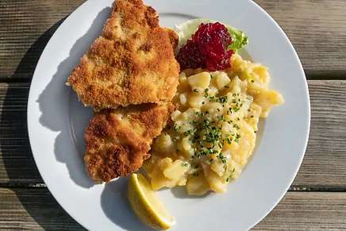
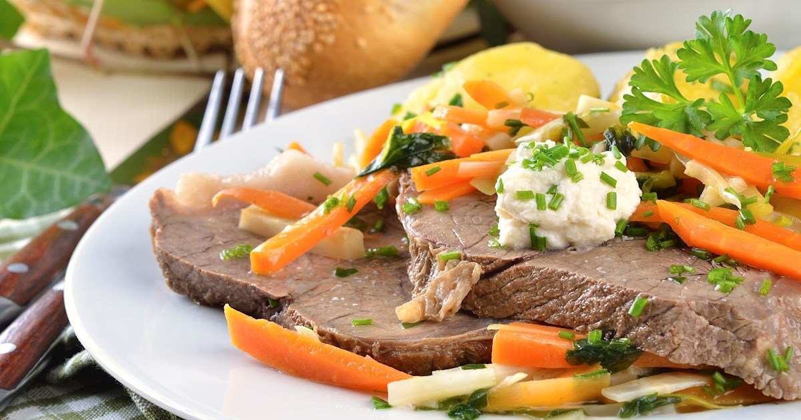
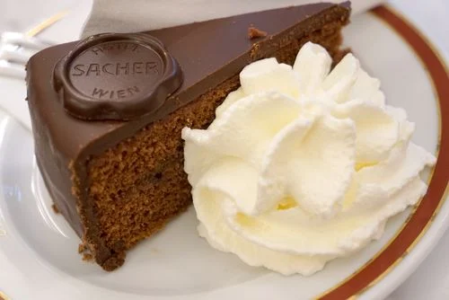

Ir para Viena é como aceitar aquele lembrete da música: você não precisa correr tanto, viver tudo de uma vez, nem provar tudo agora. A cidade é símbolo de pausa consciente, de beleza no tempo certo, de elegância sem pressa.
Enquanto o mundo diz “vai, corre, conquista tudo logo”, Viena sussurra: “Slow down, you crazy child.”
Com seus cafés antigos, sua música clássica flutuando pelas ruas, seus relógios que parecem bater mais devagar… é o lugar ideal pra relembrar que você tem tempo, que você ainda vai chegar lá, e que não precisa se destruir pra isso.
🔎 O que saber antes de ir?
Idioma oficial: Alemão
Moeda: Euro
Melhores épocas: Março, abril, outubro e novembro
🗼 Principais pontos turísticos
- Palácio Belvedere
O Palácio Belvedere é um conjunto barroco do século XVIII, originalmente construído como residência de verão do príncipe Eugênio de Saboia. Hoje, é uma das principais galerias de arte da Áustria, com três espaços: o Belvedere Superior, que exibe obras como *O Beijo* de Klimt; o Belvedere Inferior, com exposições especiais; e o Belvedere 21, focado em arte contemporânea. Além do acervo, destaca-se pela arquitetura imponente e jardins deslumbrantes.
- Museu de História da Arte (Kunsthistorisches Museum)
O Kunsthistorisches Museum, no centro de Viena, é um dos museus de arte mais prestigiados do mundo. Fundado em 1891 pelo imperador Francisco José I, foi criado para preservar e exibir a herança artística da Áustria. Seu acervo reúne obras-primas da arte ocidental em um edifício grandioso, com fachada imponente e interiores luxuosos.
O Centro Histórico de Viena é um verdadeiro tesouro arquitetônico, onde cada rua revela séculos de história. Entre palácios, residências aristocráticas e igrejas imponentes, é possível encontrar construções que vão da Idade Média até o final do século XIX, refletindo a riqueza cultural do antigo Império Austro-Húngaro. Muitas dessas mansões foram lar temporário de famílias nobres e realezas europeias.
Wiener Schnitzel: escalope de carne empanada, normalmente acompanhado de uma salada de batatas. Prato mais típico de Viena.

Tafelspitz: carne de boi cozida com verduras, vinhos e temperos.

Torta Sacher: torta de chocolate recheada com uma fina cobertura de geleia de damasco e depois com uma cobertura de chocolate.

✈️ Informações da Viagem
- Voo para Viena
Ida e Volta
Duração
Empresa
Classe
Valor
01/11/2025
24h e 50min
Latam
Econômica
R$ 3.405,79
06/11/2025
20h e 45min
Latam
Econômica
R$ 3.196,63
- Programação
Dia da Viagem
Atividade(s) e Local
Custo em euros
1º dia
Chegada à cidade e passeio no centro histórico
$ 80,00
2º dia
Visita ao museu e palácios
$ 200,00
3º dia
Tour gastronômico
$ 150,00
4º dia
Dia para compras e retorno
$ 300,00
👥 Quero ir junto!
🎵 Música em Viena
Viena é considerada o coração da música clássica no mundo, não apenas pelo número de compositores famosos que viveram lá — como Mozart, Beethoven, Haydn e Schubert —, mas também pela forma como a cidade preserva e celebra essa herança até hoje. A música está profundamente enraizada no cotidiano vienense: concertos ocorrem diariamente em igrejas, palácios e salas históricas como a Ópera Estatal de Viena e o Musikverein, uma das salas de concerto mais famosas do mundo.
❓ Curiosidade
A música "Vienna", de Billy Joel, virou um sucesso entre a Geração Z por transmitir a mensagem de que não é preciso ter tudo resolvido na juventude. A canção conforta ao dizer que a vida não precisa ser apressada, nessa fase, sentimos muita pressão, mas "Vienna" mostra que isso não define nosso sucesso ou fracasso.
Por isso essa música foi escolhida para estar neste site, já que tem um siginificado imenso para várias pessoas da nossa geração e gerações passadas, ela não é uma música típica do local mas por conta dessa música muitas pessoas almejam visitar a cidade.